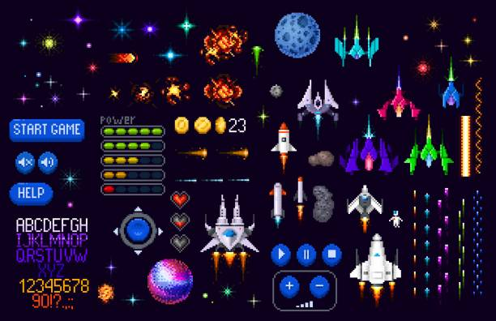
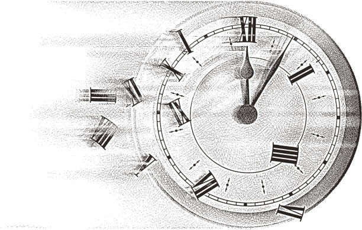

Explorez les dates clés qui ont marqué l'histoire du jeu vidéo.
Sources et documents pour approfondir vos connaissances.
Ces Wiki ont été crée par la communauté, pour la communauté.
Pour une vision plus globale du jeu en question, Wikipédia est un bon choix.
Wiki Fandom sur les jeux vidéos
Wiki détaillé sur Pong
Wiki détaillé sur Pac-Man
Wiki détaillé sur Super Mario 64
Wiki détaillé sur Minecraft